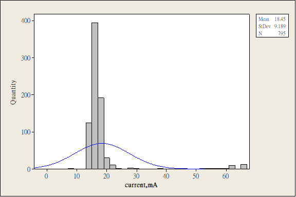
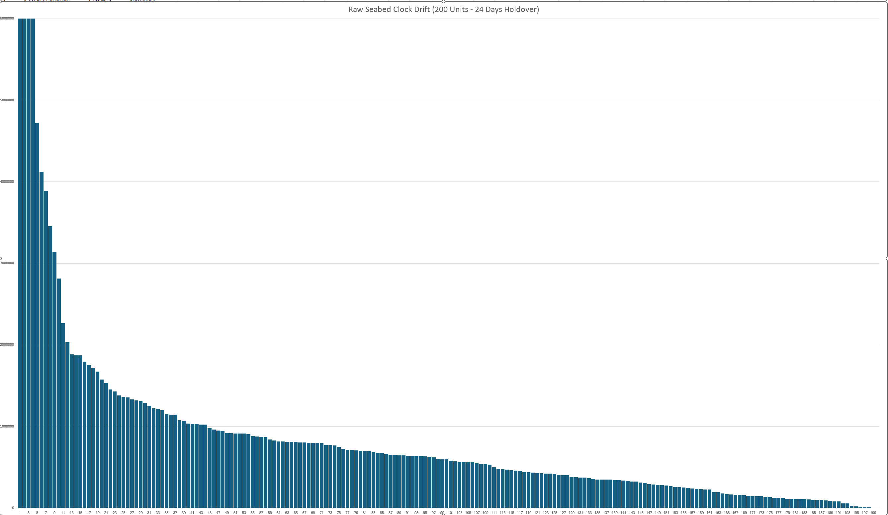
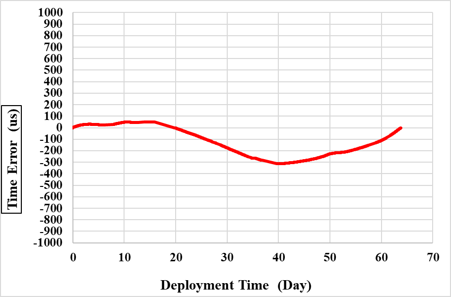
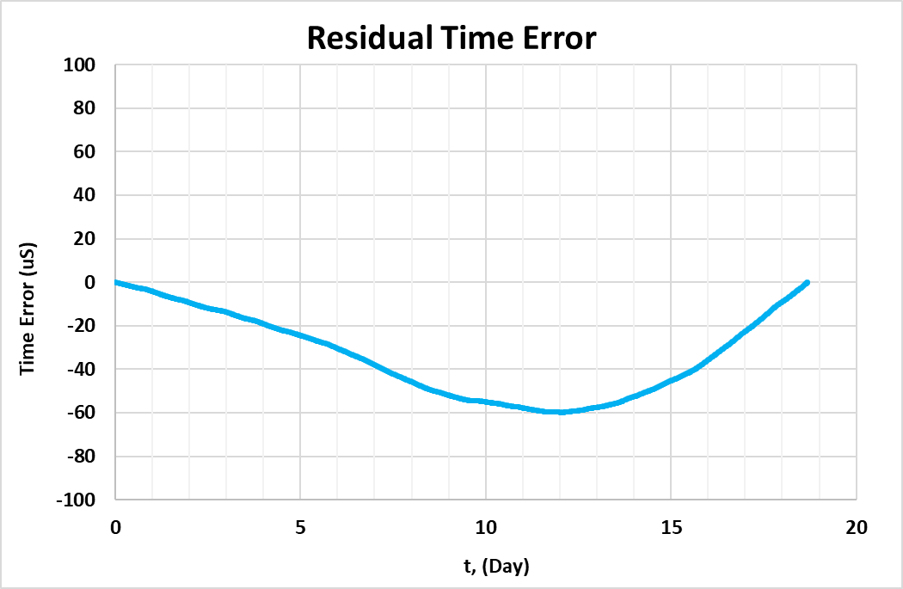
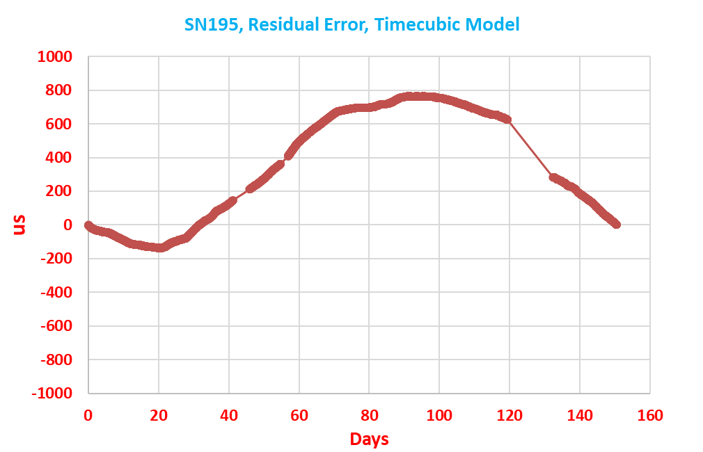
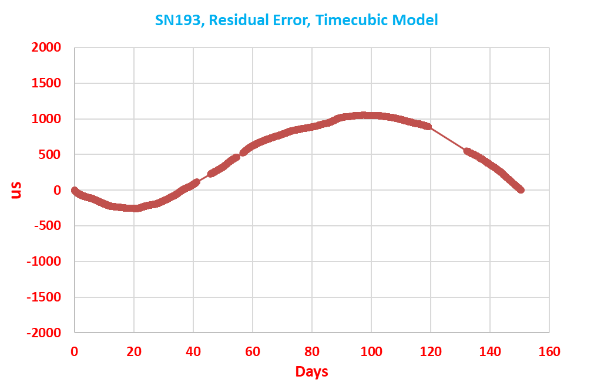
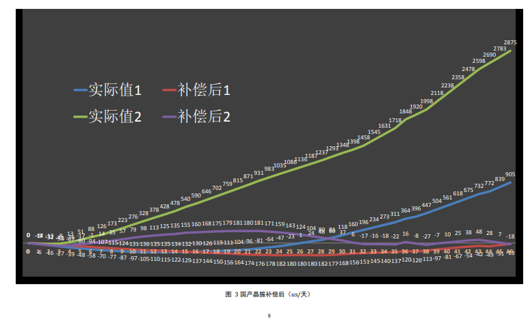

The OBN Timing Dilemma: Low Power vs. Zero-Phase Distortion
In marine offshore energy, CCS (carbon capture and storage), and seabed geophysical characterization, Ocean Bottom Nodes (OBNs) represent the benchmark technology for high-fidelity 3D and 4D seismic imaging. Autonomous node units are placed on the seabed by Remotely Operated Vehicles (ROVs) or automated handling systems at water depths extending from shallow continental shelves down to over 3,000 meters.
Unlike surface seismic vessels with continuous access to GPS/GNSS radio timing signals, seawater possesses high electrical conductivity (~4 S/m), which attenuates electromagnetic RF signals within centimeters to a few meters. From the moment the node is synchronized on the vessel deck and submerged into the sea, the internal oscillator enters a completely blind holdover state until the node is recovered weeks or months later.
Concurrently, OBN operations are governed by battery pack weight and volume limitations. Deploying and recovering node arrays of 2,000 to 5,000 nodes requires chartered specialized offshore support vessels costing $150,000 to $300,000 per day. If nodes must be retrieved prematurely at 25 or 30 days due to high clock power depletion, survey operating expenses double. Extending seabed endurance to 60 days, 90 days, or even 150 days requires ultra-low clock power consumption without sacrificing timing stability.
Excellent phase stability, but catastrophic battery draw. Consumes 1,440 Wh over 60 days, requiring unwieldy battery packs that make autonomous subsea deployment impossible.
Standard for subsea atomic holdover, but consumes ~187 Wh over 60 days. High purchase cost, export license hurdles, and rubidium cell aging vulnerabilities.
Cuts power consumption by 62% vs. CSAC, requiring only 71 Wh for 60 days. Delivers sub-millisecond holdover across 60–150 day missions.
Power Consumption Distribution: Statistical Analysis of 645 Production Q50 Units
Unlike laboratory prototypes that report "typical" figures cherry-picked from a few pristine samples, Timecubic's performance profile is derived from true mass-production factory automated test data. The dataset encompasses 645 production Model Q50 oscillators (16.384 MHz standard seismic ADC sampling frequency) tested at a nominal supply voltage of 3.3V.
Model Q50 Production Test Metrics (N=645)
- Nominal Frequency:
- 16.384 MHz
- Operating Voltage (Vcc):
- 3.30 V
- Mean Current (μ):
- 14.95 mA
- Current Std. Dev. (σ):
- 1.42 mA
- Median Current:
- 14.43 mA
- Min Current Recorded:
- 12.94 mA
- Max Current Recorded:
- 19.69 mA
- Average Power Dissipation:
- 49.32 mW

Figure 1: Current distribution of Model Q50 (16.384 MHz) showing classic normal distribution centered around 14.95 mA.
System Battery Budget Impact: 60-Day & 150-Day Operations
Calculating the cumulative electrical energy required solely to drive the master clock across common subsea deployment windows:
| Deployment Duration | Timecubic Q50 / Q100 (49.3 mW) | Standard CSAC (130 mW) | Net Energy Saved per Node | Fleet Savings (3,000 Nodes) |
|---|---|---|---|---|
| 24 Days (Standard Shelf) | 28.4 Wh | 74.9 Wh | 46.5 Wh (-62%) | 139.5 kWh |
| 60 Days (Extended Deep-Sea) | 71.0 Wh | 187.2 Wh | 116.2 Wh (-62%) | 348.6 kWh |
| 90 Days (Ultra-Long Holdover) | 106.5 Wh | 280.8 Wh | 174.3 Wh (-62%) | 522.9 kWh |
| 150 Days (Maximum Campaign) | 177.5 Wh | 468.0 Wh | 290.5 Wh (-62%) | 871.5 kWh |
*Note: 116 Wh saved on a 60-day mission corresponds to eliminating approximately 12 standard 18650 lithium cells (or 2 large D-cells) per node, drastically shrinking node diameter, dry weight, and ROV basket load limits.
Field Measurement: North Sea Campaign (24-Day, 200-Node Blind Holdover)
In a large commercial marine seismic acquisition campaign conducted in the North Sea, 200 nodes equipped with Timecubic Q100 oscillators were deployed on the seabed for 24 continuous days.
Crucially, the timing data shown below represents raw time error without post-processing correction. The clocks operated in complete free-running mode under subsea temperatures before being recovered and measured against surface GNSS 1PPS references.

Figure 2: Total accumulated time drift for 200 nodes deployed on the North Sea seabed over 24 days.
Yields an aging drift rate of merely 4.0 × 10-11 / day. This is remarkably close to the nominal CSAC specification average of 3.0 × 10-11 / day, achieved purely through crystal discipline!
Corresponds to an aging drift rate of 7.8 × 10-11 / day, satisfying the standard pre-stack migration criteria for 94% of retrieved nodes before any algorithmic correction.
Aging drift rate of 1.2 × 10-10 / day. Out of 200 units, only 9 units drifted above 3 ms, and only 2 units exceeded 5 ms due to extreme mechanical shock during seabed touchdown.
Extended Duration Field Campaigns: 64 to 150 Days Subsea
While 24-day shelf operations demonstrate outstanding raw aging stability, the frontier of marine nodal seismic is shifting toward long-duration autonomous deployments (60 to 150 days). In deep-water subsalt exploration, vessels cannot afford frequent node retrieval. The following empirical test datasets from Tier-1 marine seismic equipment manufacturers and offshore exploration teams demonstrate holdover accuracy when paired with Timecubic predictive modeling.
64-Day Deployment Holdover

Over an uninterrupted 64-day seabed deployment, the residual time error tracked in a smooth, continuous trajectory staying strictly bounded between -300 μs and +50 μs. Over 2 continuous months underwater, total timing uncertainty was held well within 0.35 milliseconds!
19-Day High-Precision Survey

In a high-resolution 19-day survey, the Timecubic solution achieved near-zero timing departure, bottoming out at -60 μs before returning cleanly to 0 μs upon retrieval. Residual drift remained below 0.06 milliseconds throughout the entire recording phase.
Extreme 150-Day (5-Month) Seabed Trial
A leading seismic node manufacturer subjected production Timecubic units (SN193 and SN195) to an extensive 150-day subsea benchmark to determine whether disciplined crystal holdover could replace atomic standards in seasonal marine exploration:

SN195 started at 0 μs, dipped slightly to -150 μs at day 20, peaked at +770 μs at day 90, and concluded at 0 μs at day 150. Peak-to-peak error remained strictly < 0.8 ms over 5 full months.

SN193 exhibited identical harmonic trajectory, bounded between -250 μs and +1050 μs, ending precisely at 0 μs on day 150. Even after 150 continuous days without GPS, timing remained within ~1.0 ms!
Model Compensation & Direct Head-to-Head Benchmark vs. CSAC
A frequent objection among seismic processing geophysicists is whether crystal oscillators exhibit predictable aging polynomials or unpredictable random walk noise. The field data below from an independent geophysical laboratory and a direct 36-day simultaneous chamber run against commercial CSAC units settle this question definitively.
46-Day Empirical Post-Compensation Performance

Figure 3: 46-day field trial comparing raw cumulative drift vs. Timecubic model compensated residual error.
Because Timecubic crystals are pre-conditioned and characterized, their frequency aging curves follow monotonic logarithmic and polynomial functions that can be completely eliminated in post-mission de-drifting software.
Timecubic Q100 with Compensation vs. Commercial CSAC (36 Days)

Figure 4: 36-day holdover comparison: CSAC #1 & #2 vs. Timecubic Q100 #1 & #2 with compensation.
- CSAC #1: -310 μs
- CSAC #2: +130 μs
- Timecubic Q100 #1: -160 to -200 μs
- Timecubic Q100 #2: +180 μs → ~0 μs
Key Finding: Across the entire 36-day test window, the Timecubic Q100 stayed strictly within ±200 μs, exhibiting virtually identical timing envelope dispersion to the CSAC atomic reference, while operating at less than half the electrical power (~49 mW vs. ~130 mW).
Architectural & Commercial Comparison Matrix
Selecting the master clock for deep-water seismic nodes involves balancing power consumption, timing uncertainty, unit cost, and component reliability. The matrix below contrasts the three primary architectures available on the market today:
| Key Parameter | Timecubic Q50 & Q100 | Chip-Scale Atomic Clock (CSAC) | Low-Power OCXO |
|---|---|---|---|
| Steady-State Power | 49.3 mW (14.9 mA @ 3.3V) | 120 – 140 mW | 1,000 – 2,000 mW |
| 60-Day Energy Consumption | 71.0 Wh | 187.2 Wh (+163%) | 1,440 – 2,880 Wh |
| 24-Day Raw Holdover (No Post-Corr) | 78.5% ≤ 1 ms; 94% ≤ 2 ms | ~1 – 2 ms typical | 5 – 20 ms (aging drift) |
| 64-Day Compensated Holdover | ±300 μs (Empirical Seabed Data) | ±200 – 400 μs | > 15 ms |
| 150-Day Ultra-Long Holdover | ≤ 0.8 – 1.0 ms (Extended Trial) | ≤ 1.0 – 1.5 ms | Unusable for seismic imaging |
| Seismic Frequency Applicability | 100% compliant with 100 Hz FWI | 100% compliant | High risk of phase smearing |
| Warm-up / Stabilization Time | < 30 seconds | 120 – 180 seconds (1.5W surge) | 300 – 600 seconds (5W surge) |
| Component Reliability & Aging Risk | High MTBF quartz crystal cell | Rubidium vapor cell leakage risk | Oven thermal stress over time |
| Unit Cost & Supply Chain | Commercial standard lead-times | Very high cost ($1,500-$3,000+); lead-time risk | Moderate cost |
Unlocking 60+ Day Seabed Endurance Without Compromising Seismic Trace Integrity
The field measurement evidence is clear: the Timecubic Q50 and Q100 break the historic compromise between operating power and holdover precision.
- Power Consumption: With an average draw of 49.32 mW (14.95 mA @ 3.3V) across 645 production Q50 units, OBN designers can reduce clock battery weight and volume by over 60% compared to CSAC.
- Mission Longevity: Validated in field campaigns up to 150 continuous days with residual drift constrained to under 1 millisecond.
- Seismic Data Usability: Sub-300 μs holdover during 64-day missions provides 100% phase-coherent data for 100 Hz Full Waveform Inversion, eliminating cycle-skipping risks and expensive survey re-shoots.
Key Engineering Takeaways for Systems Designers
Direct technical Q&A compiled by TimeCubic's North Andover, MA engineering team for hardware designers and system architects.